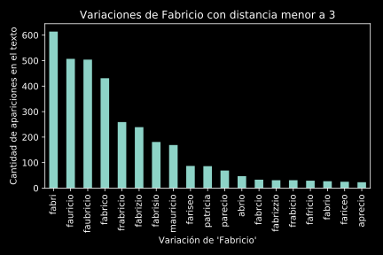
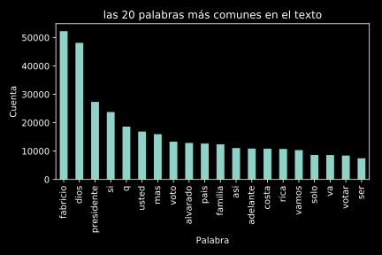
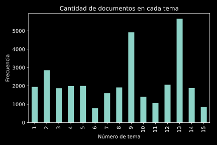

Análisis de los Comentarios en el Facebook de Fabricio Alvarado
Edgar RoblesPregunta 1: Fabricio, Fauricio, Fabrizio, etc?
Usamos una medida que cuenta la cantidad de ediciones necesarias para llegar de una palabra a otra:perro ⇨ pero con 1 cambio
pedro ⇨ perro con 1 cambio
medio ⇨ miedo con 2 cambios
Resultados
Tomamos las palabras más comunes que están a menos de 3 cambios de "Fabricio" Pregunta 2: Palabras más comunes en el texto
Tomamos el conteo usado para crear el ejemplo pasado:
Pregunta 3: Comentarios más comunes
| Comentario | Frecuencia |
|---|---|
| Fabricio presidente | 3012 |
| Fabricio Alvarado presidente | 927 |
| Amén | 733 |
| Excelente | 643 |
| Fabricio presidente | 603 |
| Así es | 431 |
| Comentario | Frecuencia |
|---|---|
| Adelante Fabricio | 421 |
| Bendiciones | 322 |
| Tiene mi voto | 315 |
| Vamos fabricio | 268 |
| #FabricioPresidente | 223 |
| Adelante | 208 |
| Vamos fabricio | 204 |
Pregunta 4: Palabras alrededor de Dios

Análisis de temas
- Latent Dirichlet Allocation
- Trata un tema como una distribución probabilística de palabras que pertenecen a este
- Responde la pregunta "si se usa esta palabra, la probabilidad de que sea parte del tema es x%".
- Podemos encontrar a cuáles temas pertenecen cada tema
- Podemos agrupar comentarios
- Este análisis se hizo tratando todos los comentarios de una persona como un sólo documento.
Principales temas
Temas interesantes
| Palabra 1 | Palabra 2 | Palabra 3 | Palabra 4 | |
|---|---|---|---|---|
| Tema 2 | politica | habla | mas | solo |
| Tema 3 | usted | derechos | personas | matrimonio |
| Tema 8 | costa | rica | pais | valores |
| Palabra 1 | Palabra 2 | Palabra 3 | Palabra 4 | |
|---|---|---|---|---|
| Tema 9 | dios | fabricio | adelante | bendiciones |
| Tema 11 | catolicos | iglesia | cristianos | evangelicos |
| Tema 13 | fabricio | voto | presidente | alvarado |